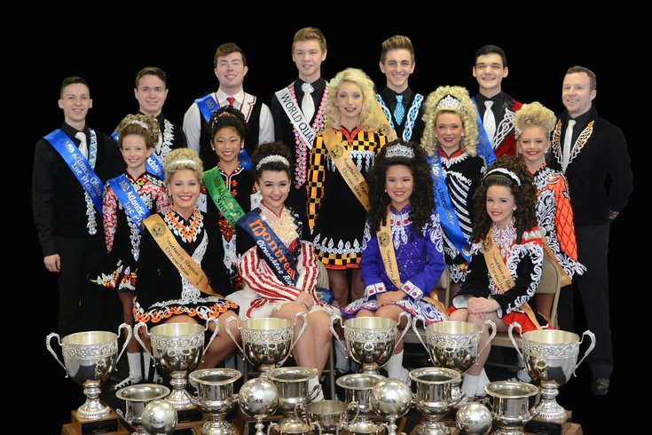

About Us
Welcome to the Sligo Irish dancing Company. Katie O'Reilly was one of the principal dancers in Michael Flatley's Lord of the Dance for over 5 years. She launched Sligo Irish Dancing Club in September 2019. She aims to teach excellence in traditional and contemporary Irish Dance in a fun and interesting way. As they like to say "teaching the FUNdamentals of Dance". The beautiful thing about Irish Dancing is that it enhances the development of children on so many different levels. Students learn discipline, health and fitness and social skills. It can also improve other children's activities through strong balance, coordination skills, and improving agility.

Dance Instructor - Katie O'Reilly
About
Katie O'Reilly started dancing at the age of 3 in her hometown of Cork. She competed all over the world and placed highly in World and National competitions. She has 12 years of professional dance experience having danced with the biggest selling musical of all time - Michael Flatley’s Lord of the Dance. She performed as principal dancer with the company for 6 years, playing the principal role alongside Michael Flatley numerous times, this being one of the most prestigious roles in the entertainment industry. In 2015 she passed her TCRG exams with Coimisiun le Rince Gaelacha, the governing body for Irish Dance. She is owner and teacher at the Sligo Irish Dancing Club. She has performed with Damhsa in between traveling the world since 2011, and is delighted to now have a managing role in Ireland’s premier Irish Dance Entertainment Company, Damhsa.
Our Team
About
Irish dance is a group of traditional dance forms originating from Ireland, encompassing dancing both solo and in groups, and dancing for social, competitive, and performance purposes. Irish dance in its current form developed from various influences such as Native Irish dance French quadrilles and English country dancing. Dance was taught by "travelling dance masters" across Ireland in the 17th-18th century, and separate dance forms developed according to regional practice and differing purposes. Irish dance became a significant part of Irish culture, particularly for Irish nationalist movements. From the early 20th century, a number of organisations promoted and codified the various forms of dance, creating competitive structures and standardised styles.